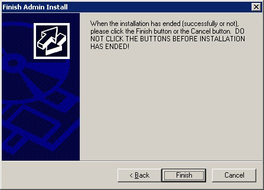

This section describes how to install the Windows Server Assistant.
Note
The installation must be performed by a user with administrator privileges (a user ID that belongs to the Administrators group).
Stop all applications before starting the installation.
The Windows Installer service must be running.
If antivirus software is installed, the system may crash, fail to start, or stop responding during installation or when starting after installation. Set the scan exclusions so that the installation directory and the resource allocation directory are not scanned for viruses.
The remote desktop service is installed in application server mode, it is necessary to switch to install mode by executing the command shown below before installation. Also, after the installation is completed, execute the command shown below to switch back to execute mode.
[Before the installation]
CHANGE USER /INSTALL
[After the installation]
CHANGE USER /EXECUTE
The following window may be displayed when executing the installation program:

If this window is displayed, perform the following operations:
Perform the installation steps until the [InstallShield Wizard Complete] window is displayed.
At the window shown above, click [Next].
The window shown below is displayed. Click [Finish].

Information
If a [User Account Control] dialog box is displayed at the start of the installation, click [Yes] to continue processing:
If [No] is clicked, permission to continue is denied and an [Error] dialog box will be displayed.
To continue the installation, click [Retry] at the [Error] dialog box. To end the installation, click [Cancel].
If installation is suspended or processing terminates abnormally, the [Program Compatibility Assistant] dialog box may be displayed. Click [This program installed correctly] and continue operation.